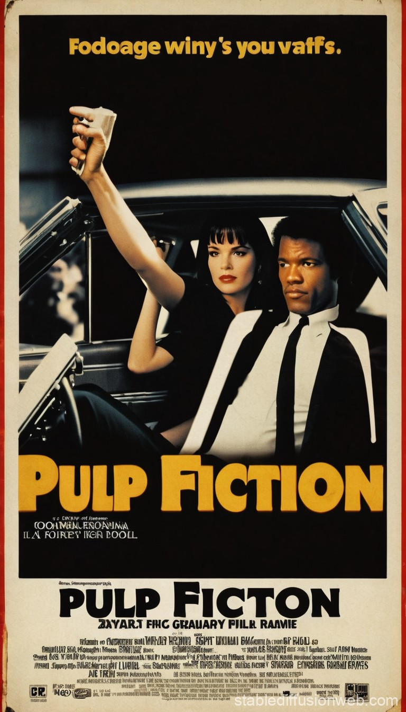

Dream Career and Favorites
Hobbies
-
Outside of my professional aspirations, I am passionate about staying fit through gyming, as it keeps me disciplined and energized.
-
Coding and solving puzzles fuel my creativity and problem-solving skills, allowing me to think critically and explore innovative solutions.
-
Gaming is a way for me to unwind, enjoy immersive experiences, and connect with friends who share similar interests.
-
I have a keen interest in politics, staying informed about global events, and engaging in meaningful discussions about pressing issues.
-
Reading is a lifelong passion that helps me expand my knowledge and empower myself with new perspectives, whether it's about history, science, or leadership.
-
I love taking photographs of nature, capturing serene landscapes and unique moments through my camera lens. Some of the pictures I’ve taken are from my own camera, reflecting my appreciation for the beauty of the natural world.
-
Traveling and enjoying nature bring me immense joy, allowing me to explore new places, experience diverse cultures, and find inspiration in the wonders of the world.
Work and Career of My Dreams
-
I aspire to build a successful career in cybersecurity and data analysis, as these fields combine my passion for technology, problem-solving, and protecting critical systems. I am driven by the challenge of identifying and addressing vulnerabilities to ensure data integrity and system security.
-
My ultimate goal is to work at a leading firm such as
CrowdStrike or
FireEye, which are globally recognized for their innovative cybersecurity solutions and ability to combat advanced threats. Their focus on real-time threat intelligence, incident response, and endpoint security excites me.
-
I admire how companies like CrowdStrike and FireEye utilize cutting-edge technologies, including machine learning and advanced analytics, to detect and mitigate cyber risks. Their proactive approach to securing organizations inspires me to contribute to such impactful work.
-
Working at these firms would allow me to collaborate with top professionals in the field, hone my skills in data-driven threat analysis, and tackle evolving challenges in cybersecurity. I am particularly interested in their role in shaping the future of global security.
-
Beyond the technical aspects, I value the mission of these companies to make the digital world safer for businesses and individuals. This aligns with my personal values and drives my aspiration to play a meaningful role in protecting data and fostering trust in technology.

Favorite Movies and Books
-
Movie: Pulp Fiction (1994)
Directed by: Quentin Tarantino
Description: is a critically acclaimed crime film directed by Quentin Tarantino. It features interwoven stories of hitmen, a boxer,
and other intriguing characters in Los Angeles, delivered with sharp dialogue, dark humor, and nonlinear storytelling.
Renowned for its bold style, iconic scenes, and memorable performances, it’s a modern cinematic masterpiece.
Genre: Crime, Drama
You can click on the link below if you want to buy this cinematic masterpiece
Link:Pulp Fiction on Amazon
-
Book: Atomic Habits
Author: James Clear
Description: A practical guide to forming good habits, breaking bad ones, and mastering the tiny changes that lead to remarkable results. The book emphasizes the power of small, consistent actions over time to achieve significant personal and professional growth.
Link: Atomic Habits on Amazon
-
Book: The 48 Laws of Power
Author: Robert Greene
Description: This book provides 48 strategies for gaining and maintaining power in social, political, and professional settings. It draws lessons from history, philosophy, and psychology, offering practical advice for navigating complex relationships and dynamics.
Link: 48 Laws of Power
Top
Go to Page 1